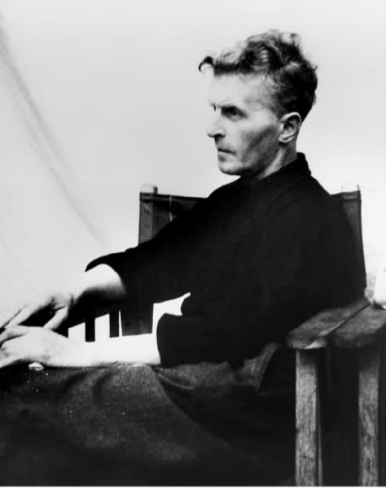

本章的主题是维特根斯坦的成熟著作，包括在他从1930年代中期到1951年去世为止所写的作品中。可是在此前的五年间维特根斯坦的思想经历了一段过渡时期，在这段时期中由于重新思考《逻辑哲学论》而萌发了他后期哲学的主题。我将以简要概述这一过渡时期开篇。
在以下各节中，我将考察在维特根斯坦后期哲学中占有中心地位的大部分思想。然而我却略去他的数学哲学以及身后出版的篇幅较短的著作，不作专门讨论。维特根斯坦在这些著作中的观点与以下要考察的主要著作即《哲学研究》、《字条集》和《论确实性》的观点基本相同。
上一节讲到维特根斯坦与维也纳学派之间的接触，这也是维特根斯坦后期哲学发展经历的一部分。正如该节所显示的，在同维也纳学派成员进行讨论的年月里，维特根斯坦一开始坚持自己早期的观点，经历了一个给这些观点作出实证主义解释的阶段，然后（在1930年代早期）才认为在许多重要方面它们是错误的。1929年回到剑桥之后，维特根斯坦便开始进入一段紧张的思想活动时期，写了很多东西。这段过渡时期大约延续到1935年，此时，将在《哲学研究》及其他后期著作中见到的许多思想已经在他的手稿中出现了。

图5 维特根斯坦生前最后的照片之一，摄于冯·赖特剑桥住宅的花园，其身后是作为背景而挂起的床单。
他在过渡时期的著作带有真正过渡的性质，其中兼有早期和后期观点的成分。其中一个主题涉及数学哲学；具体地讲，是探讨关于数学命题的地位的一些问题。数学命题是必然真理吗？数学命题能否完全通过逻辑得到说明？如果不能，又能对它们进行何种论述？同这个问题结合在一起以及相关的还有对于语言与含义、心理学概念和知识概念的长期探索性研究。后面这些研究构成了后期哲学本身的中心题目。对于研究维特根斯坦的学者来说，过渡时期的著作是一笔丰富的资料，因为它们预示并铺平了后期哲学的道路，显示出一种涵盖于许多相关内容的思想发展过程。
维特根斯坦在1929年被授予哲学博士学位之后，随即申请剑桥三一学院为期五年的研究员职位。为了表明自己具备候选人的资格，他必须呈交一份他当时进行的哲学研究的较详细的样本，他及时这样做了。这部著作便是构成以后出版的《哲学评论》的大部分内容的手稿。（英译本Philosophical Remarks出版于1975年，但是更广为人知的却是以Philosophische Bemerkungen为书名出版于1964年的德文原本。）从维特根斯坦给这本著作写序这件事来看，显然他打算出版该书。（实际上，在维特根斯坦一生中剩下二十年中的不同时期，他曾计划并安排出版他的好几部著作；从他与剑桥大学出版社代理人之间的通信可以看出有些计划已经接近实现。结果维特根斯坦的著作没有一部在他生前出版，原因是他对表达自己观点的方式或者安排自己评述的顺序从未感到十分满意。）
《哲学评论》写于1932年为止这段时期，其中有许多迹象显示出维特根斯坦与实证主义者的接触以及他们对他的影响，特别是该书对证实的强调。《哲学评论》为《逻辑哲学论》的一些论题辩护——一个重要的例子便是图像说，但是它这样做时已经有了新的因素，其中的主要因素预示随着岁月的推移日益成为维特根斯坦所关注的东西。最重要的论点之一便是强调“意义就是用法”的观念，下面将对此作出较为详细的讨论。
维特根斯坦在1932年到1934年间继续大量写作，写了一份很长的手稿，最终于1969年以《哲学语法》为书名出版，英译本于1974年出版。这部著作有两部分，标题分别为“命题及其意思”和“论逻辑与数学”，由此可以看出其内容。维特根斯坦在1933—1934年间对这部著作进行修改，同时向学生口授笔记，后来这些笔记以打字稿的形式流传开来，按装订封皮颜色而取名《蓝皮书》。这本非正式出版物与《哲学语法》第一部分之间有着很大的相似性。
《哲学语法》的重要性在于它包含了后来出现在《哲学研究》中的内容，这些内容有时表现为其初始形式，有时则表现为完整形式。《哲学语法》第一部分所探讨的中心问题是我们怎样使意义与由发出的声音和写印的记号所构成的语言联系起来。维特根斯坦在这里的论证简述如下。
一个很自然的观点是说理解语言是一种伴随语言活动的心理过程。按照这样一种观点，当我说话、聆听或阅读时，我心中就发生某种领会 被使用符号的意义 的过程。维特根斯坦立论反对这个观点；他说，理解语言不是一种过程，而是一种能力。他为这个论题举出的一个例证涉及“知道怎样下棋的问题”。如果知道怎样下棋是一种过程——某种在大脑中进行的事情，那么就有理由问：“你在什么时候 知道怎样下棋？你一直知道还是就在你移动棋子的时候？”（《哲学语法》，§50）。但是这些问题显然有些古怪；它们的不自然表明将理解和知道当作心中发生的事件是一个错误。
维特根斯坦说我们倒是应该将它们看作能力，看作我们有实际能力去做的事情。他说，“心理过程”的观念本身无论如何是混乱的，容易让人产生误解——维特根斯坦认为这一论断非常重要，因而在他后期著作的哲学心理学中占有主导作用，正如我们将看到的那样。
维特根斯坦在《哲学语法》中继续探讨“思维”和“理解”本身这些关键性概念，其探讨方式很接近以后的《哲学研究》，特别是他主张理解有许多种类，其间的联系不是由于共同具有一组本质上的或界定性的特点，而是由于有一种被他称为“家族相似”的一般性类似关系。这个概念在《哲学研究》中也起着重要作用。它最早见于《哲学语法》，随后在《蓝皮书》中得到更明晰的阐述。在后一本书中后期哲学有了另外的重要发展，特别是意义就是用法的理论：维特根斯坦说，我们不要问“一个词的意义是什么？”而应该问“说明 一个词的意义是怎样一回事？词的用法是怎样学会的？”《蓝皮书》和《哲学语法》第一部分共同探讨的问题是：是什么“将生命赋予”（将意义赋予）构成语言的声音和记号；维特根斯坦的回答是：“如果我们必须说出记号的生命是什么，我们就不得不说那就是它的用法”（《蓝皮书》，第4页）。
维特根斯坦在1934—1935年间将一份手稿口授给他的两个学生；同《蓝皮书》一样，手稿以非正式的方式在剑桥大学内外流传。装订封皮的颜色又一次决定了书名，这一次取名为《褐皮书》。《褐皮书》在内容上非常接近《哲学研究》；实际上这是后一著作的草稿。《褐皮书》的出现标志着维特根斯坦思想过渡阶段的终结；此后进一步发展《哲学语法》及《蓝皮书与褐皮书》中思想的作品也就构成了《哲学研究》的真正草稿，正如G.H.冯·赖特在他重构该书所经历的各个阶段时所指明的那样。过渡时期著作的一个突出特点是其关注的题目绝大部分仍是《逻辑哲学论》所探讨的问题，其中最重要的是“命题及其意思”——这一特点在后期著作中一直贯彻始终；同这些关注相关联并且作为维特根斯坦以新的方式对其进行探讨的必要补充的是关于理解、意向、经验等心理学概念的讨论。至于其理由读者很快便会明白。
在考虑自己的杰作《哲学研究》的出版时，维特根斯坦认为如果与《逻辑哲学论》一并出版，人们会更好地理解它。他的理由是《哲学研究》在许多重要方面是对《逻辑哲学论》作出的一个反应，所以将两者进行比较会有力说明《哲学研究》所要讲的东西。我们即将开始的关于后期哲学的讨论将表明这种说法在什么意义上是正确的。
维特根斯坦在《逻辑哲学论》中的立场是：语言具有一种可以发现的独一无二的本质，一种单一的深层逻辑，它可以通过对语言和世界作出显示结构的分析和对两者之间的“图像映示”关系作出描述而得到说明。图像映示关系本身归根结底依靠名称与客体之间的指示性联结关系；名称“意指”客体。《哲学研究》的论点来自对这种观点的明确否定。在这里维特根斯坦说，不是只有一种“语言逻辑”，而是有许多种“语言逻辑”；语言不具有单一的本质，而是由各有其自身逻辑的实践组成的广大集合。意义并不存在于字词与事物之间的指示关系或者命题与事实之间的图像映示关系；一个表达式的意义不如说就是它在构成语言的多种多样的实践中的用法。进一步说，语言并不是某种完备而独立的东西，可以不考虑其他因素而进行研究，因为语言就交织在人类全部活动和行为之中，由此语言的许多不同用法乃是通过我们的实际事务、我们的工作和我们彼此之间以及同我们居住的世界之间的交往才获得内容和意义的——一句话，语言是一种涵盖一切的“生活形式”结构中的一个组成部分。
我们必须重视维特根斯坦在其过渡时期形成的一种关于哲学方法的性质的观点，尽管其中仍然保留了《逻辑哲学论》中哲学观的核心特点，却有了一个重大的不同。了解维特根斯坦在这个问题上的立场对于阐明他的后期哲学信念会有很大帮助。
正如先前提到的，维特根斯坦《逻辑哲学论》的观点认为哲学问题的产生乃是由于我们“误解了语言的逻辑”。这种信念在维特根斯坦的哲学著作中一直贯彻始终。正如我们刚刚看到的，发生变化的是他对“语言逻辑”含意的看法。但是还有另外一种变化。维特根斯坦已经认识到由于对语言的误解而产生的问题不能通过构建一种系统的哲学理论来解决，像他在《逻辑哲学论》中努力去做的那样。他说，不要设计理论 去处理哲学问题，而是应该首先通过消除引起问题的误解来“消解”这些问题。这样我们就将哲学设想为一种完全按字面理解的治疗 活动：“哲学家处理一个问题就像治疗一种疾病。”（《哲学研究》，255）因此，维特根斯坦在其过渡时期和后期著作中放弃了《逻辑哲学论》的严格的系统方法，代之以一种逐步解决的方法，目的显然在于避免产生一种结构性理论。正是这一特点让后期著作显得很不连贯和松散，与《逻辑哲学论》的简约风格恰成对比。
维特根斯坦将他所认为的研究哲学的正确方法和目标等后期观点都写进了《哲学研究》。维特根斯坦说，困惑产生于语言的误用或对语言性质的误解。如果我们对语言运作的方式有不正确的看法，就很容易陷入混乱；例如，我们会把一种表达式的用法归入另一种完全不同的表达式的用法，或者我们会错误地脱离其正常运作的语境去理解一个表达式。维特根斯坦说，“我们陷入混乱发生在语言处于发动机失灵的情况下，而不是在它正常运作的时候”（《哲学研究》，132）；“哲学问题产生在语言去度假的时候 ”（《哲学研究》，38）。治疗的办法是观察语言实 际 运作的方式：“（哲学问题）当然不是经验问题；恰恰相反，它们的解决是靠审视语言的运作方式，从而认识这些运作方式——尽管 我们有误解它们的冲动。”（《哲学研究》，109）
按照这种观点，哲学问题在语言的运作得到正确理解之后便将消失。在通过“审视”语言的运作来进行治疗之前，哲学家就像飞进瓶子里的苍蝇，无助地嗡嗡乱撞。维特根斯坦评论道：“你的哲学目的是什么？是让苍蝇看到飞出捕蝇瓶的途径。”在这里需要理解维特根斯坦所说的“表层语法”与“深层语法”之间的区别。维特根斯坦所说的“语法”并不是指该词通常被理解的词义；而是指逻辑——更确切地说，是指一种特定语言活动的逻辑。语言活动有许多不同的种类；所以语言的“语法”也就有许多不同的运作方式。按照维特根斯坦的看法，哲学家陷进捕蝇瓶中乃是由于只注意到“表层语法”：“在字词的用法中，人们可能会区分出‘表层语法’与‘深层语法’……比如说，比较一下‘意指’这个词的深层语法与其表层语法会让我们生出疑问。这就难怪我们感到很难找到正确的道路。”（《哲学研究》，664）。所以维特根斯坦说《哲学研究》是一种“语法”研究：“因此我们的研究是语法性的。这样一种研究通过消除误解来阐明我们的问题。”（《哲学研究》，90）这就让人回想到《逻辑哲学论》，其中就将哲学描述为“阐明”——又一个表明维特根斯坦早期与后期思想连续性的实例，但是在《哲学研究》中方法是与所主张的观点紧密相关的，表现为这些观点的内容在某种意义上恰好就是正在运用的方法：因为维特根斯坦关于方法所说的话可以归结为这一主张，即在哲学中我们不应去说明而只应去描述（“说明”表示要构建更多的理论），因为我们不是在努力发现新的知识，而是与此十分不同地在正确组织（并从而让我们自己正确理解）我们对语言和思想早已知道的东西。
维特根斯坦关于方法所说的话注入了他后期哲学中的全部研究方法。使用这种方法的效果随着我们考察《哲学研究》的主要思想而变得清晰起来，这正是我们现在将要看到的。
按照维特根斯坦在《哲学研究》中的观点，要理解语言的各种运作，第一步就是让我们自己摆脱下面这个诱人的但却是错误的假定，即认为可以给出一种单一的关于语言的描述——也就是用一种单一的理论模式来说明语言的全部运作。在这里他所针对的当然就是《逻辑哲学论》；作为回应，他通过攻击该书在《哲学研究》中提出语言是由许多不同活动组成的观点。《哲学研究》的序言点明了对《逻辑哲学论》的语言观的攻击：“（近来）我有机会重读我的第一本书……我突然想到应该将这些旧的想法同新的想法放在一起发表：这样一来后者通过以我自己的旧的思考方式为背景并与之进行对比才可以得到正确的理解。因为自从我重新开始从事哲学工作以来……我已经不得不承认我写的第一本书中存在严重错误。”
维特根斯坦对这些“严重错误”作了具体说明，他不是去谈《逻辑哲学论》原书，而是讲到圣奥古斯丁在《忏悔录》中关于语言学习的说法。维特根斯坦先引用了奥古斯丁若干行原文，其中有“当长辈称呼某物时……我就明白他们发出的声音就是该物的名称”，然后他说：“在我看来，这些话给了我们一幅关于人类语言的特殊图像。这就是，语言中的单个字词称呼物体，这些名称组合成句子。从这种语言图像中我们发现下面这种思想的根源：每个字词都有一种意义。意义与字词相互关联。字词所代表的就是物体。”（《哲学研究》，1）刚才简述的自然是《逻辑哲学论》的理论，但是维特根斯坦使用了奥古斯丁的说法来表明所说的这种语言观既久远又普遍。另外，维特根斯坦说这种语言观还引导我们以错误的方式去研究语言；我们问些错误的问题，特别是“关于语言、命题、思想的本质 的问题”，而这就错误地暗示语言的“本质”不是“某种早已展现出来并且经过重新安排便可加以审视的东西，而是某种处于表层之下 的东西……‘本质向我们隐蔽着 ’：这就是我们的问题呈现的方式”（《哲学研究》，92）；因此“我们感到好像必须透过 现象去看”（《哲学研究》，90）。而这又转而促使人们相信那种被维特根斯坦认为是奥古斯丁和《逻辑哲学论》所共有的错误的语言模式，因为这种模式“看起来好像（我们应该寻找）某种类似语言形式的最后分析的东西，因而也就是寻找每个表达式的单一的 完全解析的形式。这就好像是通常形式的表达式在本质上未曾分析过似的；好像其中隐藏着某种有待揭示的东西”（《哲学研究》，91）。维特根斯坦对于这种语言图像的反应是明确无疑的：他否认有任何必要去分析、去发现 隐藏在话语中的本质 。“哲学只是把一切事物放在我们面前，既不加以说明也不进行演绎。——因为一切事物都已展现出来，也就没有要说明的东西。举例说，隐藏的东西对我们来说毫无意义。”（《哲学研究》，126）关键在于刚刚引自《哲学研究》第92条的话：维特根斯坦认为语言运作的方式是“某种早已展现出来并且通过重新安排便可加以审视的东西”。
维特根斯坦说，“展现出来”的是这一事实，即语言并不是一种单一的 东西，而是一群不同的活动。我们用语言来描述、报告、告知、肯定、否认、推测、下命令、问问题、讲故事、演戏、唱歌、猜谜语、说笑话、解题、翻译、请求、感谢、祝贺、咒骂、祈祷、警告、回忆、表达感情和完成其他许多活动（特别参看《哲学研究》第23节以及比如说第27、180、288、654各节）。所有这些不同的活动维特根斯坦都称之为“语言游戏”。早些时候他在《褐皮书》中就曾使用这个概念来表示语言中一个经过简化的部分，审视这一部分我们就可以知道一些有关语言本身性质的知识。在《哲学研究》中这一概念获得了更加普遍的意义；它意指我们所做的许多不同的使用语言的活动当中任何一种活动：“‘语言游戏’这个名词旨在突出指明说讲 语言属于一种活动的一部分，或者说属于一种生活形式的一部分。”（《哲学研究》，23）维特根斯坦谈到“语言游戏的多样性”，他在《哲学研究》第23节中列出一个语言游戏目录（大体如上所述）之后紧接着说：“有趣的是将语言工具及其使用方式的多样性、字词和句子的种类的多样性同逻辑学家（包括《逻辑哲学》的作者）关于语言结构的说法进行比较。”这种比较是在语言游戏的广泛多样性与“逻辑学家”和《逻辑哲学论》作者认为语言有一种单一的深层逻辑结构这种错误观点之间划分的。
维特根斯坦使用“游戏”这个词并不是想暗示报告、描述、询问以及其他等等不同的语言活动有什么轻浮或微不足道之处。这些活动当然是严肃的。他使用这个概念的理由见于下面这段文字：
维特根斯坦在说语言 是由各种语言游戏所组成的时候，（正如我们已经看到的）他想点出的要害恰恰就是语言并没有可用一种整体理论来发现和阐明的单一本质。为了理解语言的运作，我们必须首先认识语言的不同和多样性——“我不去寻找某种为我们所说的语言所共有的东西，我讲的是这些现象并没有一种共同的东西可以让我们用相同的词去称呼它们全体，——但是它们却以各种不同的方式互相关联着” （《哲学研究》，65）。按照维特根斯坦的观点，一旦明白了这一点，我们就看出为什么他在《逻辑哲学论》中所持的意义观是错误的：他在该书中主张词的意义就是它所指示的客体；而在《哲学研究》中作者则主张表达式的意义乃是它在构成语言的许多不同的语言游戏中所能派上的用场：“一个词的意义就是它在语言中的用场。”（《哲学研究》，43）
在《哲学研究》的开头引用奥古斯丁的话之后的前面几节中，维特根斯坦表明为什么《逻辑哲学论》所采用的意义的指示理论本身有很大的缺陷。他的论点简单地说就是：如果词的意义在于它与客体的指示联系，那么这种联系就得由实指的定义建立起来，即通过指着一个客体——一般是用手去指——并说出其名称来实现。这就是维特根斯坦认为是奥古斯丁所持的观点。但是指出实物并不能作为语言学习的基础 ，因为要懂得一个客体正在获得称谓，学习者就得至少先掌握一部分语言，即称呼客体这种语言游戏。这个论点可以这样加以说明：假如你在教一个不讲英语的人“table”这个词，你用的方法是在说出这个词时实指（指着）一张桌子。为什么学习者认为你是在称呼桌子而不是讲桌子的颜色、功用或其表面的光泽，或者甚至是命令他爬到桌子底下？当然在这个实例中，学习者由于早已掌握了他的母语，很可能会认为当前的语言游戏是称呼客体；但是一个第一次学习者却不具备这样的知识。这样看来怎样才能开始学习语言呢，如果意义就是指示从而依靠实指的定义？
维特根斯坦对实指的定义进行批判的目的是想让我们看清下列一些暗示：第一，同《逻辑哲学论》的理论相反，称呼并不是意义的基础；第二，称呼关系本身并不仅仅是由实指建立起来的声音（或记号）与客体之间相互联系的问题，而是必须通过名称与称呼参与语言活动的方式来理解。第一点是告诫性的，因为在《逻辑哲学论》中全部语言都是用指示模式来说明的，而如今维特根斯坦在《哲学研究》中则表明这种模式不能作为范例来说明全部语言运作的方式——让它作为范例来用甚至是产生错误和困惑的根源。第二点与“意义就是用法”这一概念相关联；这是《哲学研究》的一个核心特征，其含义需要加以说明。
在《哲学研究》中，作者有意不对“意义的用法理论”作出系 统的 表述。维特根斯坦对于用法概念的使用范围也有意定得宽泛，理由在于表达式的用法正如产生它们的语言游戏一样多变，所以没有单一的公式可以表达其多样性。实际上“用法”这个词本身并没有什么神圣之处；维特根斯坦另外还讲到字词和句子的功用（ 《哲学研究》，11、17、274、556、559），讲到它们的目的和意图（例如5、6、8、348），讲到其职责（402），讲到其作用和用途（例如66以下），目的在于用这些不同的说法使人对表达式 在语言中所起的作用 有个总的认识，中心思想就是认为掌握一种语言在于能够将语言中的表达式应用到其所属的许多不同的语言游戏中去。由于语言游戏的多样性，用法也就不可避免地会是一个含义广泛的概念，所以找不到一个能够概括它的单一的公式。实际上用法这个概念也不应当被视为一个公式；对维特根斯坦来说，“意义就是用法”这个口号并不是意义的定义。为了掌握这个概念的全部含义，人们必须更多地了解维特根斯坦在《哲学研究》中进行的讨论，特别要结合他关于意义 与理解 之间的关系的观点以及他认为理解不是一种内心状态或过程，而是“掌握一种技术”的论点（《哲学研究》，99）；这里所说的技术就是遵循规则来使用表达式。
这些问题中有一个在上面一节讨论维特根斯坦的过渡时期时曾经谈过。这就是维特根斯坦终于抛弃了以下思想，即人们通过一个表达式来理解某种东西乃是经历一个内心过程。维特根斯坦特别关注的是反对那种认为理解意义就是有某种东西“展现在人的心灵之前”的观点（像《逻辑哲学论》所提示的，是一个图像或形象）；因为理解一个词并不是一种类似看见红色或感受疼痛的经验（《哲学研究》，140、154、217—218）。这并不是否认也许有一些经验伴随理解过程——某一个词可能唤起一个形象或者由于记忆的联想而产生比如说一次愉快的感受，但是这些经验并不构成词的意义或者人们对词的理解。在这里维特根斯坦是在驳斥那种认为意义的根基在于感官经验的经验主义观点；对于维特根斯坦来说，否定这种观点会导出两个论点：第一，人们并不是通过在学习者心中建立起字词与对某个客体或某种情形的体验之间的联想来教授词的意义的；第二，我们在使用表达式的不同场合赋予表达式意义，而这并不靠每次都有同样的经验或者经历相同的心理过程。
维特根斯坦为了驳斥这种认为理解是“内心状态或过程”的观点给出了好几个理由。一个理由是意义和理解这些概念的逻辑不同于经验概念的逻辑（即他所说的“语法”）。让我们看一下疼痛：这是一种经验，我们能说疼痛延续时间的长短，是脚趾痛还是头痛，是剧痛还是隐痛。我们对于理解表达式却不能讲任何这一类的话；我们不能讲长时间理解表达式，或者在脚趾上理解，或者剧烈地理解。另一个理由是同一个表达式让不同的人联想到不同的形象或作出不同的反应；因此表达式的意义不可能存在于这些伴随的心理现象之中，人们对表达式的理解也不可能如此（参看《哲学研究》，137—138）。第三个也许是最重要的理由是：就理解一个表达式而言，仅发生一种特殊的内心过程是不够的。为了具体说明这句话是什么意思，维特根斯坦以“立方体”一词的用法为例，说以为在“人的心灵前”出现一个立方体心理图像就是理解该词的想法是一个错误，因为这个心理图像本身并不告诉 而且不能告诉 人们“立方体”一词是什么意思。一个立方体的心理形象甚至可以与任何数目的表达式（如“盒子”、“糖块”、“几何学”、“冰块威士忌”）联系在一起，所以这一图像并不决定 “立方体”一词应该怎样正确去理解（《哲学研究》，139—140）；也就是说我们不能从任何可以联想到的形象看清词的意义是什么。
这些思考产生了另外一个更具普遍性的问题。这就是某些哲学家因为认识到维特根斯坦在这里指出的那种困难并从而发现很难将理解与某些特殊的 心理过程等同起来，于是便转而认为有一种特殊类别的深层的 （因而是隐蔽的）心理过程，是它构成了对一个表达式“意义的理解”——换句话说，这种过程收进所有构成该表达式的图像或联想（或者其中一个重要子集）并以某种方式将其组合成某种难以确认因而只能通过深入的哲学分析来推导和考察的东西。维特根斯坦完全反对这种看法；实际上他对“内心状态或过程”观点的主要攻击就是针对那种认为理解乃是某种隐蔽 的东西（不仅在“心中”而且在内心深处）的观点。
维特根斯坦在讲过意义和理解不是什么之后，便进而对它们是什么作出正面的说明。在这里处于核心的是理解的概念。维特根斯坦说：“理解一个句子意味着理解一种语言。理解一种语言意味着掌握一种技能。”（《哲学研究》，199）这就是说，“理解”乃是知道怎样做 某件事情；就语言来讲，理解语言意味着知 道怎样使用 语言。这样看来，理解、意义和使用之间有着紧密的关联。由此直接导出两个推论：第一，维特根斯坦反对“内心过程”观点的另一个理由变得清楚明白了——这种观点根本不能说明我们怎样才能够使用 表达式。对比之下，将“理解”看作我们所做的某件事情——我们施展的一种能力，我们使用的一种技能——的观念是与使用的观念直接关联在一起的，因为使用本身就是一种活动。第二，作为一种实践能力的理解是某种由外界标准——人们从事的活动，人们的行为方式——来确认和衡量的东西，因而是某种公开存在于公共领域的东西，远远不是在个人精神生活内部或者属于私人的东西。我们现在就将看到，这会引出一些重要的推论。
维特根斯坦关于理解语言的论述（照刚才所讲，“理解”就是掌握一种技能或实践能力）借助于遵守规则这一观念，即认为理解表达式的意义这种实践就是遵守表达式在其所从属的各种不同的语言游戏中的用法规则（注意“规则”的说法很自然而且有意地与“游戏”的说法相关联）。维特根斯坦关于遵守规则的讨论主要出现在《哲学研究》第143—242节之间。这并不是一个简单的问题，因而是一个引起很多争论的主题；在阅读下面对该主题的论述时应当记住这一点。
了解维特根斯坦关于遵守规则的讨论的一个办法是再一次回想起《哲学研究》的一部分意图就在于从反面否定《逻辑哲学论》所体现的那种哲学态度。使用语言显然是一种受规则支配的活动，即哲学家所说的“规范”活动。维特根斯坦在《逻辑哲学论》中用来描述语言的规范特征的模式是一种演算的模式，也就是一种由严格定义的、自动运行的规则（逻辑的规则）组成的结构化系统。这样一种演算就像一台机器，给它原料便按照一种精确、有序和不变的方式生产出固定的产品。同样，逻辑规则——（按照《逻辑哲学论》的观点）从而也是语言规则——有其可以确定结果的严格用法。就语言来讲，这种结果便是意义：当人们掌握了表达式的应用规则时便理解了它的意义。维特根斯坦在《哲学研究》中当然并未否定这个观点，因为后期哲学还要借助于它；他所否定的是认为相关的规则形成一种单一的、严格的深层结构，甚至更为重要的是否定这些规则独立于我们之外，像《逻辑哲学论》所暗示的那样。换句话说，维特根斯坦否定演算的概念，而代之以语言游戏的概念：在《逻辑哲学论》中，在全部语言之下有一种单一的、严格一致的演算法；而在《哲学研究》中则有许多不同的语言游戏，其“语法”可以直接加以考察。
《逻辑哲学论》中的以及一般“奥古斯丁式”的语言观是：一个词的正确用法的规则通过某种方式由该词所指示的客体的性质所确定，因为只有通过这种方式该词的意义（所指示的客体）才能支配词的用法。维特根斯坦抛弃了指示说；这就使得词的意义完全成了属于它的用法规则的事情。但是既然只有词及其用法规则事关紧要，那就一定不要受规则概念本身的误导，因为关于诸如逻辑和数学的规则有一种普遍的看法，即认为这些规则决定着我们做事是否正确，并不依赖我们应用或遵守这些规则的实践；而维特根斯坦则认为这是错误的：不仅本身错误，而且它意味着一组规则对于某一特定实践来说构成了一套完全而决定性的算法，意思是说一旦人们掌握了这些规则，他们就能自动看出自己所做的事情是否正确。按照维特根斯坦的观点，逻辑规则的模式应用在语言上是特别有害的，因为在语言中支配表达式用法的规则有很广泛的多样性，而在逻辑中则有一组单一的、包罗一切的严格的规则，这组规则构成了逻辑所赖以存在的“语言”。
演算的观点在处理规则与遵守规则的两个特点的方式上产生了维特根斯坦希望我们避免的那些问题。一个特点是人们在遵守规则时感觉受到规则的指导和强制；规则似乎在告诉 人们去做什么，似乎在支配 人们的活动。另一个特点是在一个类似诸如算术的演算中，规则事先就确定了应用规则所能得出的结论：例如，很容易认为一旦我给0—9这十个数的加减运算、相等关系下了定义（即给出支配它们的规则），全部算术过程就会自动引导出来——好像全部的算术真理（及谬误）早已“包含”在这些基本规则之中或受其预先确定。因此，这些规则似乎有着某种不可抗拒的东西，使得我所做的事情的正确与否与我做这件事情本身完全无关。（一班小学生中每一个成员可能用不同的方法将一组数字相加——有人用心算，有人用手指算，其他人则用计算器或算盘——但是遵守相关算术规则的人都会得出一个唯一正确的答案，而这个答案在他们开始做加法之前 就是正确的。）
关于遵守规则这个概念的一个问题是：一方面感觉受到规则的指导并不保证规则受到遵守，因为某人可能认为自己在遵守规则而实际却在错误地使用规则；另一方面某人行事符合规则可能只是出于偶然——这个人也许根本不是在遵守 规则；比如说他也许甚至不知道规则的存在。然而规则的指导作用以及不管在任何有关活动中遵守规则就等于做得正确 这两点对于规则和遵守规则的概念看来都是至关重要的。维特根斯坦说，赞成演算观点的人因此力图找寻一种关于遵守规则的深层基础的统一描述（典型的做法是将遵守规则视为一种内心活动过程），以此来说明这些特征并克服与之相关联的一些问题；并进一步通过提出这种以某种心理机制 为根据的描述（多半是一种因果性 的说法）来达到上述目的。维特根斯坦说，所有这一切都是错误的；他的理由仍然是那些他用来反对试图为任何涉及意义和理解的问题提出单一性说法（尤其是想借助于“内在的”和“隐蔽的”心理过程来提出的说法）的理由。
这些指责更多适用于遵守规则的一个特点，即人们主观感受到规则是强制性的或者具有指导行动的力量。另一个谈到过的特点——规则在表面上的“独立性”——照维特根斯坦所说，则暗示出那种认为规则多少会带来客观性 的错误看法。算术的例子很能表明这是什么意思：正如已看到的，算术规则似乎已经预先 确定了我们使用规则所得结果的正确与错误。例如对于“56，897+54，214=？”这道算术题存在着一个唯一正确的答案，这个答案就某种意义讲早已存在 ，甚至在我们进行计算之前在规则所允许的范围内就已被确定。我们通过确定这些规则所说的意思来核对我们使用规则的正确性；所以由规则树立的正确性标准就显得独立于我们对规则的遵守，因为规则并不依靠我们的这样一种活动，即将规则当作由其本身所确定为正确的东西来使用。
演算观点集中关注的这两个特点当然是相互关联的：正是规则的外在性或“客观性”才让我们感到受规则的指引或指导。这两个特点结合起来便让人产生一种假想，即认为规则就像铁道线一样，我们沿着它按照固定方向移动（《哲学研究》，218）或者说规则就像一台按照被确定的并且起确定作用的方式工作的机器（《哲学研究》，193—194）。维特根斯坦的反对意见并非针对规则具有指导性 或者构成正确性 这一事实；倒不如说他的反对意见针对的是“铁轨”或“机器”这些模式本身，理由（正如我们所看到的）是这些模式将指导的概念转变为强制的概念，并将正确性标准的概念转变为某种“外在的和客观的”东西。维特根斯坦所强调的是这一关键性事实，即构成 规则的乃是我们对于规则的集体使用 ；遵守规则就是一种由共识、习惯和训练所建立的普遍实践。因此，尽管规则确实指导我们并向我们提供正确性的尺度，但规则并非独立于我们，从而并不构成一种强制的标准，从外界将遵守规则的实践本身强加给我们。维特根斯坦给我们举过一个实例：想一下我们在十字路口或某条小路上可能看到的路标。路标告诉人们要走的方向，但并不是因为路标强制人们去那里；路标的指导作用全靠有一种习惯、一种实践来确立我们通常对路标的使用，以及我们对这种功能的理解。这正是我们所理解的语言的“规则”——“一条规则立在那里就像一个路标”（《哲学研究》，85，参看198）。
这里的中心概念是“习惯”。维特根斯坦说，“一个人只有在经常使用路标这种习惯存在的情况下才会按照路标走路”（《哲学研究》，198）；“使用‘遵守规则’这个概念要预先假定一种习惯的存在”（《关于数学基础的评论》，第322页）。通过使用习惯这个概念（他在其他地方使用了“惯例”、“用法”、“实践”等说法，意思是一样的），维特根斯坦意图提出几个论点，其中两个论点特别重要。一个现在已为大家所熟知，即（与演算理论观点恰好相反）认为遵守规则并非一种内心活动，某种隐蔽的东西，而是一种公开的事实；当某人看见一个路标并照其指示方向行走时，他并不是在内心遵守一条规则，然后——作为按照因果关系或其他相关方式紧随“内心”遵守这第一步之后的第二步——再按照规则行事：他选择路标所指示的方向只是由于他遵守相关的规则。因此遵守规则根本不是一种神秘的活动；遵守规则在我们的实践中显示自身，它是明摆着的。为了理解规则和遵守规则，我们只需提醒自己注意在所有我们的那些不同类别的规范性行为（下象棋、照食谱烹饪、做算术等等以及在所有各种不同类别的语言游戏中使用语言）中所熟悉的东西。另一个论点是认为遵守规则本质上是一种社会实践，即某种存在于社会群体之中的事物，并认为建立我们所遵守的规则的正是存在于社会群体当中的共识 ：维特根斯坦说，“‘共识’一词与‘规则’一词是彼此相关的，它们是堂兄弟。如果我教人学会其中一个词的用法，他便随之学会另一个词的用法”（《哲学研究》，224）。遵守规则本质上是一种以社会为基础的活动这一事实意味着没有任何可以被看作“私自”遵守规则的东西——不可能有一个规定并随即遵守某一规则的鲁滨孙·克鲁索，因为这样一个人无法知道自己从一个场合到下一个场合是在遵守这项规则——他很可能认为自己是在这样做，但他却没有核查的手段。某个人是否在遵守一项规则依赖于有无检验他这样做的公开标准：“因此‘遵守规则’也是一种实践。而认为 人在遵守规则并不就是遵守规则。因此不可能‘私自’遵守规则：不然认为人在遵守规则就同遵守规则成了一回事。”（《哲学研究》，202）。（私自和“标准”这些概念对维特根斯坦来说是些重要的概念，我在下面还要谈到它们。）
维特根斯坦除了坚持以共识为基础的规则和遵守规则在本质上具有社会性质之外，还坚持要照字面意义去理解“习惯”这一观念，将其看作某种经常的、反复的、已确立的事情。他说：“应用‘遵守规则’的概念要预先假定一种习惯的存在。因此下面的说法是没有意义的：在世界历史上某项规则（或者一个路标的指示，做一次游戏，说出或理解一个句子，等等”）只被人遵守一次。（《关于数学基础的评论》，第322—323页）
因为规则建立在为一个社会群体同意和接受的实践之上，所以维特根斯坦说规则就是其本身的合理根据。在遵守规则上，除了受这一事实——如果一个人的活动不符合社会群体在某种情况下的习惯做法，他便没有遵守一项定下的规则——的限制之外，不存在任何外在的或客观的因素。这就证明维特根斯坦的观点已经远离《逻辑哲学论》的看法，后者认为存在某种凌驾于语言之上并构成对其客观限制的东西；维特根斯坦在《哲学研究》中的观点是：想为我们的实践找到某种外在的合理根据或理由是一种错误。这种合理根据或理由就在我们的实践本身之中；维特根斯坦在某个相关的地方说：“给出理由……总有个尽头，尽头……就是我们付诸行动，行动才是语言游戏的底层。”（《论确实性》，204）这就使他能够进一步说遵守规则是我们不加思考（《关于数学基础的评论》，第422页）甚至是盲目去做的事情：“当我服从一项规则时，我并非经过选择。我盲目地服从着这项规则。”（《哲学研究》，219）他说的话的意思可以通过观察比如说象棋来理解；对于“为什么王棋一次只能走一个方格？”这个问题来说是没有答案的，因为如果人们下的是象 棋 ，那么这本来就是定下的规则。所以实际上维特根斯坦的观点就是：遵守规则是一种习惯性实践，是作为我们的语言群体的青少年成员时所接受的一种训练：“遵守规则类似服从一项命令。我们是受到训练才这样做的”（《哲学研究》，206）。他在《蓝皮书与褐皮书》（第77页）中将这一论点讲得更加明白：“孩子通过接受语言用法的训练从成人那里学习这种语言。我使用的‘训练’一词十分类似我们讲动物接受训练去做某些事情时所指的意思。”
我们将以上两节中考察的内容结合起来看，就能够将维特根斯坦关于意义和理解的学说描述如下。一个表达式的意义就是我们在理解该表达式时所理解的东西。理解就存在于知道该表达式在跨越各种各样的语言游戏时的用法，而这一表达式就出现在这些语言游戏中。知道表达式的用法就是具有一种能力：有能力在那些各自不同的语言游戏中遵守使用表达式的规则。遵守规则并不是一种神秘的内心过程，即理解某种类似在客观上树立正确性标准的演算那样的东西；倒不如说这是一种植根于一个社会群体的习惯和共识的实践，而作为一种实践来看，遵守规则本质上则是公开的事情。规则确实指导行动并提供正确性的标准，但是规则做到这一点乃是由于它们建立在共识之上；正确遵守规则就是遵循社会群体已成习惯的实践。我们是通过作为该社会的成员接受训练才获得使用语言表达式，即遵守其用法规则的能力的。
这个概述是想讲明意义、理解、用法、规则等概念之间的关联以及它们是以语言使用者组成的社会群体中的共识为基础的道理。但是人们不应认为这意味着可以一个一个 地去理解语言表达式，因为按照维特根斯坦的看法，说某个人只理解一个或几个句子或者说他只遵守一项或几项规则是没有意义的。理解任何一个特定句子就是理解它所从属的语言游戏；相应地说，遵守一项规则就是掌握了对遵守规则本身的实践。
维特根斯坦关于意义和理解的说法直接显示一个问题，即如果一种语言的用法规则是语言社会群体中成员的共识的产物，不附有以“事实”或“世界”为表现形式的外在的客观限制，那么真理 是否随之也是我们的共识的产物？维特根斯坦意识到了这个问题并作了回应：“‘你是否在说人们的共识决定什么是真和什么是伪？’——真和伪是人们说 出来的；而人们的共识就在他们使用的语言 之中。这并不是意见上的共识，而是生活形 式 上的共识”（《哲学研究》，241，强调形式是另外加上的）。
“生活形式”这一概念在维特根斯坦后期哲学中起着重要的作用，因为每逢他的探讨到达其他哲学家想为我们在思考和交谈中所用的概念开始寻求更深层的或更基本的合理根据的时候，他总是求助于这个概念。维特根斯坦用“生活形式”所表达的意思是：语言的和非语言的行为、假定、实践、传统和天然爱好等方面的基本共识才是作为社会存在的人所共有的，因而也是在人们使用的语言中被预先假定的；语言被编织成人类活动和性格的方式，语言表达式的意义是其使用者共同的观点和天性赋予的（《哲学研究》，19、23、241；《哲学研究》第二部分，第174、226页）。所以一种生活形式就存在于社会群体协调一致的自然的和语言的反应之中，这些反应产生了界定、判断以及随之而来的行为上的一致。因为存在于实践之中的语言用法的所谓“基础”就是语言编织成的生活形式，所以在维特根斯坦看来关于寻找体现于我们思想和谈话之中的概念的最终解释或合理根据的问题很快就会走到尽头——我们的语言用法的合理根据就是作为用法基础的生活形式，事情就是这样：更多的话既不必说也确实不能说。生活形式是我们学会在其中工作的参照框架，是我们在社会群体的语言中接受训练时获得的；所以学会这种语言就是学会该语言与之密不可分并且从中获得其表达式的意义的观点、假定和实践。这就是为什么解释和辩护都不必也不能超越关于生活形式的一种姿态：“如果我对正当性的证明已经走到尽头，那么我就碰到了基岩，我的铁锹也会转向，这时我就想说：‘这正是我做的事情’”（《哲学研究》，217）；“人们可以这样说：必须接受的事物，被给予的事物就是生活形式”（《哲学研究》第二部分，第226页）。
生活形式的概念是同维特根斯坦所强调的语言在本质上 的公共 性质紧密相关的；正如我们已看到的，这一后期哲学的主题出现在他对下面观点的反驳中，即认为意义和理解——因此还有遵守规则——都是心灵“内在的”、“隐蔽的”状态或过程。维特根斯坦就此提出一种论证，这一论证我们至今尚未谈到，但在讲述《哲学研究》的文献中却占有十分重要的地位。这就是“私人语言论证”，其要点是说不可能有一种由单独一个人发明且只能为其所理解的语言。这个道理直接来自维特根斯坦认为语言本质上 是公共的这一观点，他维护这一观点乃是由于上面讨论过的所有理由；但是维特根斯坦在《哲学研究》第243—363节中却由于另外一个重要理由而对私人语言问题作出了广泛的探讨。这就是在从笛卡尔开始的哲学传统中，人们总是认为一切知识和解释的起点都在于对我们自身的经验和心理状态的直接感知。所以笛卡尔的出发点是“我思”，认识到这一点保证了“我在”；而经验论者则认为正是我们的感官经验和对经验的反思提供了我们相信外界事物和其他心灵存在的基础。依照这些观点，一种私人语言显然是可能的，因为它们接受下面这种想法（在某些情况下它们就来自这种想法），即认为一个天生的鲁滨孙·克鲁索能通过私人的、内心的实指定义来联结字词与经验，从而构建一种语言。与此相关，私人语言的观念就蕴涵在我们关于在语言中怎样获得指称自己的疼痛、心情、感受等等的表达式的常规看法之中，因为这些状态只有我们自己知道：没有另外一个人得知这些状态，除非当事人通过语言或行为表现它们；没有另外一个人能够感受我的心情或疼痛，甚或觉察出其存在，假如我不愿意的话。由于这种情况，我们就认为自己在通过一种内心的实指为我们的感觉“命名”，好像我们在胃疼时“指着体内”说“这就是胃疼”。而这就暗示一个人能够通过对自己说出在原则上无法为任何其他人知道的他自身的感觉和内心生活来构建一种语言——这种“在原则上”的说法表示这样一种语言并非只是一种任何其他人都不能真正理解的密码，而是类似谜码或佩皮斯日记，也许可以破译，但是除了说话人之外没有任何别人能够理解它：简单地说，这是一种在逻辑上只有说话人懂得的语言。
维特根斯坦在《哲学研究》上述章节中猛烈抨击的正是这种在逻辑上只有说话者自己知道的语言观。早已给出的主要理由是：理解一种语言就是要能够遵循使用这种语言的规则，没有什么可被认为是私人在遵循规则，否则在遵循规则与只是认为——也许是错误地认为——我们在遵循规则之间就没有区别了（《哲学研究》，202）。然而还有其他理由。对于维特根斯坦来说，正如我们已经看到的，讲一种语言就是参与一种生活形式；而共同参与一种生活形式就在于接受共同参与这种生活形式的训练；这种训练显然必定在公共的场合发生，否则它就不是一种共同参与赋予语言以意义的生活形式的训练了（参看《哲学研究》，244、257、283）。由此可知，“私人的”经验与我们用来讲述它的语言实际上都不是私人 的；使用有关疼痛、心情以及其他等等的表达式有而且必须有公共的标准 ，即使为了这些表达式的存在也要这样。维特根斯坦说，要讲明白这一点，一个方法就是考察我们在讲述自己的情况时怎样使用“疼痛”这个词。按照他所反驳的那种观点，“疼痛”是某一种感觉的名称，我们通过一种内心的实指行为来为那种感觉命名。但是正如我们以上所看到的，实指的定义只有在一种先前已被理解的惯例或语言游戏的背景下才有效果，在这一背景下，指出、发音等行为都能被参与者识别，从而构成为某个事项附上指示标签的过程。在这里不可能有这种先前早已存在的语言游戏。既然“疼痛”并未通过实指使其与相关的感觉联系起来，“疼痛”也就什么也不指示 ；“疼痛”不是一个标签。那么“疼痛”又是怎样与我们用它讲述的那些感觉联系在一起的？维特根斯坦说，“一种可能”是讲述 疼痛是通过学习获得的对作为疼痛的自然表露的呻吟和抽搐的代替（《哲学研究》，245、256—257）；“小孩因弄伤自己而哭喊；这时大人对他说话并教他感叹词，后来还教他句子”（《哲学研究》，244）。要点在于我们通常认为属于私人的状态或过程——疼痛、发怒等等——都是我们人性的一些特征，因而在行为上都有其自然表露形式（比如说婴儿能用语言之外的手段告诉我们他/她疼痛或发怒），而我们用来讲述它们的语言手段就是在公共生活中学会的取代那种行为的替换物。
这一看法在我们怎样使用关于疼痛的话语来讲自己的疼痛与我们怎样使用它来讲他人的疼痛之间建立了联系。按照一个传统的观点，我们认为在适当情况下自己有理由相信疼痛或类似的“内心”状态也发生在他人身上，其方式是通过与自己的情况进行类比：如果我刺伤了手指，流了血，并发出呻吟，那么如果他人刺伤了手指，流了血，并发出呻吟，我就会推断出他必定在内心同样感到疼痛。但是这种论证——叫作类比论证——是一种无力的论证；它在逻辑上并不保证我所作的关于他人内心状态的推论有效，因为他也许在假装或作戏，或者他甚至是个巧妙设计的毫无感觉的机器人。这就是对他人心灵抱有怀疑态度的根源：既然类比的论证无效，我又怎能认为我有理由相信宇宙中除了我自己的心灵之外，还有其他人的心灵？维特根斯坦的观点为这个问题提供了一个答案。他说，使用“疼痛”以及其他心理表达式的规则是公共的规则，不管是谈到我自己还是他人都同样适用；对于这类表达式不存在两组规则，一组支配为属于我自己的状态寻找原因，另一组则支配为属于他人的状态寻找原因。因此，我说某人感到疼痛，其理由就来自他的行为加上我所掌握的使用“疼痛”这个词的规则。
不应把这种观点理解为一种简单的“行为主义”学说，即主张“疼痛”所指的不过是由抽搐和呻吟构成的身体信号。维特根斯坦说，这些信号还不如说就是使用“疼痛”这个词的“标准”；我还知道这类行为可能是假装、掩饰等等。理解这一点就是理解疼痛话语的一部分。但是有了这种理解，即理解这类行为进入我们的活动和实践的网络的方式并且理解这些事情与我们的天性之间的关系，也就告诉了我什么时候适合说他人感到疼痛（以及什么时候适合说“这是一例伪装”之类的话）。
维特根斯坦关于“标准”的概念引起了很多讨论。这是为使用表达式提供一类合理根据或保证的概念，这是为了使用表达式而提供的一种介乎演绎理由与归纳理由之间的保证。我们可以用下述方式来说明它的意思。“演绎理由”就是这样一些理由，它们蕴涵或决定性地确定以下情况，即只要这些理由存在就要求使用某一特定表达式，因为这些理由穷尽了该表达式的全部意思。这个观点的一个实例是刚才谈到的那种原始的行为主义；支持这一观点的人就从某人抽搐和呻吟推断出他感到疼痛。但这是一种过分强势的学说，因为在将支持说出“他感到疼痛”的理由等同于“疼痛”的意义时，演绎主义者忽略了其他考虑，例如假装等等，它们表明该词的意义不能被定义为使用它的理由。
对比之下，“归纳理由”是这样一些理由，它们将某人的抽搐和呻吟当作征候或线索，并且以此为根据可能推论出他感到疼痛。然而这些线索本身并不是“疼痛”这个词的意义的一部分；照归纳主义者的观点看，这种意义是某种由“疼痛”所指示的事物，是某种私人的、隐藏在那个人主观性中的事物，即那种内心的、私人的疼痛感觉。照归纳主义者的观点看，在以抽搐和呻吟为一方与以内心的疼痛感觉为另一方之间的关联只是一种偶然的关联。
正如我们已看到的，维特根斯坦关于标准的讨论有意落脚于这两种观点之间。他说，我们关于抽搐和呻吟（行为信号）在表现疼痛上所起的作用的理解是我们掌握“疼痛”这个词的意义的一部分——这些信号不仅是疼痛的偶然征候，但同时它们并不是将疼痛归于某个抽搐和呻吟的人的演绎理由，因为我们对于“疼痛”的理解也包含这类行为并不表现疼痛的实例。简单地说，用来将疼痛归于某人的标准来自包括将疼痛归于某人在内的语言游戏；当我们学习怎样使用“疼痛”一词时，学会的是体验、识别和谈论疼痛的实践。
讨论私人语言问题和关于疼痛、心情以及其他被推定为私人心理状态的问题将我们带进维特根斯坦的心灵哲学或者通常称为他的“哲学心理学”的领域。维特根斯坦在这个方面所讲的话是他关于意义和理解的观点的一个重要推论——照某些批评家的看法，这甚至是他的语言哲学的基础——因此有必要在下面作进一步的探讨。
维特根斯坦在《逻辑哲学论》中将“心理问题”——其中包括关于经验和知识的问题——简单地归为“经验性的”，从而不属于哲学而属于科学。由于这个原因，他在《逻辑哲学论》中几乎未提及这类问题。与此形成强烈对比，这类问题在后期哲学中却随同意义的讨论占据了中心位置。既然维特根斯坦努力争辩说，理解语言表达式并不存在于个人心理状态或过程之中，这样做便是十分自然的事情；因为他的观点意味着不仅这种思路不对而且普遍来讲“个人心理状态”这一概念本身也不正确。因此，从《蓝皮书》开始，但主要是在《哲学研究》、《字条集》以及其他后期著作中，维特根斯坦一直攻击这个想法：认为经验、思想、感觉、意图、期待以及诸如此类的概念具有内在性和私人性，只有拥有它们的人才得知晓。
之前我们已经讲到维特根斯坦所攻击的是自笛卡尔以来在哲学史上一直占有统治地位的观点。这种观点赋予主观经验一种特有的原初性和重要性。这种观点说，我们直接知晓的事物是我们自己的个人心理状态，由于这些状态的直接呈现而让我们对其内容和性质有着完全可靠的知识；这些状态，包括感官经验在内，为我们提供了一切知识和信念的出发点，这些知识和信念不仅涉及我们自己而且涉及我们身外的一切事物（主要是外在世界和他人心灵）。笛卡尔哲学的出发点是自我，人们对自我的存在只能感到是确实的；对于经验主义者来说，正是感官经验为我们关于世界的信念提供了不可动摇的基础。按照这种看法，关于心理状态的第一人称的知识是完全没有问题的，而关于心理状态的第三人称的知识则完全不同，理由是在他人身上发现这些心理状态——甚至在有理由相信这些状态在自己身外存在的情况下——充其量不过是从本质上不可靠的线索（他人表现出来的明显信号、行为等等）中进行推理得到的结果。
维特根斯坦在攻击这个笛卡尔命题时逆转了困难的顺序：他说，成问题的并不是第三人称的心理状态的归属问题，因为这类归属是以比较简单的公共标准为基础来使用心理字眼的（例如上面讲过的关于“疼痛”的使用）。相反，需要探讨的倒是第一人称的情况，因为维特根斯坦说正是在这里笛卡尔和这个哲学传统中的其他人犯了一个根本性的错误，即认为心理状态的第一人称归属（“我有一次疼痛”，“我期待……”，“我希望……”，“我的意图是……”）是本质上属于个人内心活动的记 录 或描述 。维特根斯坦否认这些说法名副其实，而争辩说是些表露 或表现 ，它们构成了使用相关心理概念的行为的一部分。在这里，中心概念就是“表现”。
维特根斯坦在他对第一人称的疼痛话语进行的探讨中讲明了他所用的“表现”所指的意思。在上面曾部分引用过的《哲学研究》第244节中，他说“一个人是怎样懂得感觉名称的意思的？——例如‘疼痛’一词。这里有一种可能：一些词与这种感觉的原始的、自然的表现相关联并用来代替这些表现。小孩因弄伤自己而哭喊；这时大人对他说话并教他感叹词，后来还教他感叹句。他们教给孩子新的疼痛行为”。维特根斯坦的主张是：某个人说出“我感到疼痛”就是他的疼痛的一种表露，这并不是某种另外发生在内心的事物的外在信号，而本身就是他的疼痛行为的一部分。这是疼痛的一种表现，正如呻吟和抽搐是疼痛的表现一样，但这却是学来的取代那些较原始的表现的替代物。尽管上面引用的话中的“这里有一种可能”暗示第一人称的心理话语也有可能通过其他方式来理解，然而维特根斯坦却将“表现”这个概念作了广泛的应用。就意愿、期待和记起——只举全部心理概念中的三个为例——来讲，维特根斯坦说，“基于天性以及一种特殊训练……我们在某些外界环境下往往倾向于让意愿得到自发的表现”（《哲学研究》，441）；“‘我随时都期待听到砰的一声’这个陈述就是期待的一种表现 ”（《哲学研究》，253）；“我用来表现记忆的言语就是我的记忆反应”（《哲学研究》，343）。因此，有时向往某种事物的愿望的本质部分就在于说出“我的愿望是……”，而期待某种事物的本质则部分在于说出“我在期待……”。期待也可以用其他方式表现；人们也许感到紧张，或者走来走去，或者常看手表；但是说出“我在期待……”与这类行为并无不同——更不是关于期待的记录或描述，它就是期待的一部分 。当然，因为语言行为是学来的，它比走来走去这种“原始”行为复杂；维特根斯坦采用了这种观点，即对语言的掌握带来了不使用语言的动物无法拥有的丰富和细致：“一只狗相信主人在门口。但是它也能相信主人会在后天来吗？”（《哲学研究》第二部分，第174页）但是语言行为与其他行为之间的差别只是程度上的，而不是类别上的；语言行为是期待、疼痛等自然表现的延伸，而自然表现则要随情况而表现为走来走去或者抽搐等形式。
维特根斯坦对心理概念采取这一思路的理由当然是认为“疼痛”、“期待”之类词语的意义不能由个人内心实指来确定；照维特根斯坦的观点看，这一论点是靠私人语言论证建立起来的。更确切地说，同所有字词一样，这些词的意义就是它们的用法，而它们的用法又是在共享的生活形式下由大家公认的使用它们的规则所决定的，正是这种共享的生活形式才使得这种公认成为可能。因此，心理字词的使用是完全一致的，不存在用于第三人称是一套规则而用于第一人称是另一套规则的情况。规则是同样的，都要依照同样的公共标准，“没有什么是隐蔽的”。所以正如心理字词的第一人称归属依靠它们是疼痛、期待以及其他等等表现因而也就是疼痛等行为本身的一部分那样，心理字词的第三人称归属也就是我们对于他人做出的行为的表现：“确信某个人感到疼痛，怀疑他是否感到疼痛等等都是对于其他人做出的许多自然的、本能的行为，而我们的语言只是从属于这种关系并对其进行了进一步延伸。我们的语言游戏是原始行为的一种延伸。（因为我们的语言游戏就是行为。）”（《字条集》，545）这就表示照维特根斯坦的观点看，自笛卡尔以来一直困扰哲学的“他人心灵”的怀疑论问题并不存在，因为刚才说过的想法——关于构成心理字词的意义的公共标准从而也关乎我们对使用它们的保证的想法——表明一切被传统哲学家视为本质上 是内心的状态都有并且都必须有外界的标准；并且表明人们可以通过十分平常的并不神秘的方式，如实观看、确知某个人所处的状态：“另外一个人脸上的意识。审视另外某个人的脸，就看见他脸上的意识，一种特有的显出稍许不同的意识。看见快活、冷淡、兴趣、兴奋、麻木等等直接或含蓄地表现在脸上。为了在他的脸上看出怒气，你还需要审视自己 吗？这在他脸上正如在你胸中一样明确无误”（《字条集》，220）；“意识表现在他脸上和行为上正如在我自己身上一样明确无误”（《字条集》，221）；“‘我们看见情绪’——与什么相对照？我们并不是看见面部的异样并据此推论出（像医生做出诊断一样）快活、悲伤、厌倦来。我们会直接说一张悲伤、快活、厌倦的脸，甚至在我们不能就面貌特点给出任何其他描述时也是这样。——我们会说悲伤在脸上被拟人化了。这属于情绪概念的范畴”（《字条集》，225）。
对于维特根斯坦来说，从所有这些论点引出的一个重要推论是：这些论点迫使我们重新考察另外一个极其重要的概念，即知识的概念。在哲学传统中，人们认为我们对自己心理状态的熟知所特有的原初性为我们能够知道或者至少有理由相信一切其他事物提供了基础；因为按照传统的观点，我们确实知道我们自己的思想、经验等等的内容，但是超出这个范围便只能根据它们作出多少带有疑问的推论。与这种观点相反，维特根斯坦争辩说对于知识概念的这种用法是完全错误的，理由在于我们只能知道可以有意义地加以怀疑的事物，而因为只有当人们感到疼痛或期待听到砰的一声响时才不会怀疑这两种感受，所以我们不能说知道 人们感到疼痛或具有这种期待。这一论点通过观察维特根斯坦对于G.E.摩尔关于知识和确实性提出的某些论题的回应可以极其明白地看出来。
摩尔在一篇题为“关于外在世界的证明”的有名论文中争辩说，存在着一些他能完全确实知道它们为真的命题。一个命题是“他有两只手”；他说，“证明”（如果需要的话）就是他能高举双手并展示它们。因此还有许多可以同样确实知道的其他这类命题。摩尔在这里是以批评的态度暗指笛卡尔在其《沉思录》中提出的主张，即一方面人们只要想到就能够确实知道作为一个“会思维的事物”（心灵）的自身存在；另一方面却可以对人们有“手和身体”提出合理的怀疑（《沉思录》，第一部分）。按照摩尔的“常识”哲学，这一类怀疑可以极其容易地驳倒；证明有手存在简单到只需展示双手。维特根斯坦虽然站在摩尔对笛卡尔关于知识和怀疑的观点进行的实事求是的反驳这一边，但他认为笛卡尔和摩尔两人对这些概念的思考都是错误的。正如已经指出的，他的理由是当怀疑本身没有意义时要坚持对知识的主张也是没有意义的；因为除了在极少的不幸的场合，人是否有手的问题根本不会而且不可能有理由出现，所以“我知道我有两只手”这句断言涉及对“知道”一词的误用。维特根斯坦的论证理由依靠对怀疑性质的思考，以及他对于构成我们日常知识和我们日常生活的“基础”的事物的看法。这些思考有如下述。
维特根斯坦说，怀疑本身只有在一种语言游戏的背景下才是可能的。如果要让关于我是否有手的怀疑清晰易懂，我就必须理解谈论“手”和我“有”手是什么意思。但是这样一来，这种理解由于它以使其可能存在的语言游戏为基础，本身就使得这类怀疑没有意义；因为有了怀疑就威胁着所使用的词带有意义这种状况本身。“我在我的句子中不假思索就使用‘手’这个词以及所有其他的词，实际上如果我甚至想去怀疑这些词的意义，我便会面对着虚空的深渊——这表明不容怀疑属于语言游戏的本质。”（《论确实性》，370）应该记得，一种语言游戏就是一种生活形式；这是一种实践或者一组实践，需要具备关于字词用法规则的共识。根据维特根斯坦常说的“我们讲话的意义来自我们的其他行为”（《论确实性》，229），可以推论出“如果你什么事实也不确知，你也就不能确知你所用的词的意义”（《论确实性》，114）。这不仅表明除了在极其不寻常的情况下，怀疑人有双手在语言游戏内部是没有意义的，而且表明语言游戏本身不能作为整体或从“外部”加以置疑：作为一种生活形式，语言游戏是“早已给予的事实”。维特根斯坦指出，一个小孩比如说正在学习历史，他就必须先接受语言游戏，然后才能提问某件事情是否真实或者是否存在（《论确实性》，310—315）；他说，“怀疑出现在信念之后 ”（《论确实性》，160）。如果学生继续怀疑世界的存在是否超过几个小时或几年之久，那么他们学习历史的任务就不可能完成。维特根斯坦说这样的怀疑是“空洞的”怀疑（《论确实性》，312），因为实际上这样的怀疑是让整个语言游戏本身成为不可能。但是如果语言游戏是不可能的，那么怀疑本身也就不会有任何意义：“一种怀疑一切的怀疑就不成其为怀疑。”（《论确实性》，450）
这些思考所排除的是与我们的语言及其他实践的基础相关的怀疑。维特根斯坦并不是说对任何事物都不能有任何怀疑，因为这当然可以有。但是合理的怀疑只能在一个本身不能被怀疑的框架的背景下才有意义：“怀疑这种游戏本身就预先假定了确实性。”（《论确实性》，115）所以摩尔肯定自己的手存在的主张——以及推广到任何肯定物质事物的存在、这个世界的历史连续性等等基本事实的主张等——就不是可以合理加以怀疑的事物，因为这些事物构成了我们全部实践的参照系。维特根斯坦说：“我的生活 就在于我满足于承认许多事情”（《论确实性》，344）；“我的生活证明我知道或者确信在那边有一把椅子或者一扇门，等等”（《论确实性》，7）。因此在维特根斯坦看来，摩尔——以及（笛卡尔的）哲学传统，其观点影响了摩尔对这些问题的看法——的错误在于未能看清他不知道并且不能知道他认为自己知道的东西：“我想说的是：摩尔并不知道他断言自己所知道的事情，但是这些事情对他来说是不可动摇的，正如对我来说也是这样。将其看作绝对稳固的东西是我们进行怀疑和探索的方法 的一部分。”（《论确实性》，151）“当摩尔说他知道某些事情时，他实际上是在列举许多我们无须特别检验就可以肯定的经验命题。这些也就是在我们的经验命题体系中完成特殊逻辑作用的命题。”（《论确实性》，136）
关于某些命题的“检验”及“特殊逻辑作用”的想法令人想到维特根斯坦在其后期著作中其他地方就相关事实所讲的话，即具备理由或给出证明终得有个结束。它们结束的地方就是构成语言游戏的生活形式；这就是赋予我们的行为以可理解性的框架结构。检验我们的信念只能以无需检验的信念为背景来进行。“我们所提的问题 和我们的怀疑 依靠这一事实，即某些命题是不容怀疑的，它们好像是这些问题和怀疑赖以转动的枢轴。”（《论确实性》，341）。这些不容置疑的命题就是“语法”命题，即构成我们的语言和实践的框架的命题，它们构成了在其中进行一切检验的体系（《论确实性》，83、90—92、105）。维特根斯坦以不同的说法描述了这些命题所表示的信念，以说明它们所起的基础性作用：他说我们对它们的确信乃是由于我们的天性（《论确实性》，359），它们在“我们的参照系中所起的特殊作用”（《论确实性》，83）在于它们就是我们日常可检验的信念的“来源”（《论确实性》，162）或“支架”（《论确实性》，211）。
尽管维特根斯坦说这些信念构成了我们的语言游戏的“基础”（《论确实性》，401、411、415），他所用的这个词的意思却不同于哲学家通常所指的意思。“基础信念”通常用来指那些固定且持久的信念；所以有些哲学家主张，有一些信念是任何可以作为思想或经验的事物在逻辑上的必要条件，甚至火星人或神灵都得具备它们才可以享有任何被认作经验的事物。与此相反，维特根斯坦却说基础信念的基础性只是相对而言的——它们就像确定一条河的流向的河床和两岸（《论确实性》，96—99）；河床和两岸由于长时间经受腐蚀而移动，但这是一个长期的过程；从日常谈话和实践的观点看，人们可以把基础信念视为“稳固的”和“可靠的”东西（《论确实性》，151）。但是重要的论点是：“语法”命题所起的基础性作用在于其在实践或行为中的不容置疑性：“某些事情实际 上是不受怀疑的，这一点属于我们科学探究的逻辑。”（《论确实性》，342）
维特根斯坦关于怀疑与确实性的探究的要点包含在一个不必回答的反问中，即“人们能够说‘没有疑问的地方也就没有知识’吗”（《论确实性》，121）。这句话的目的在于从根本上推翻笛卡尔认为第一人称的知识才是知识 的观点，从而支持了维特根斯坦对于下述观点的攻击，即个人心理状态具有特许权，哲学家在其中找到了不仅是知识的而且是意义和理解的来源。方才所讲的维特根斯坦关于知识的思考虽然来自《论确实性》，代表比《哲学研究》晚些而且更为详尽的对这些问题的看法，然而这种看法的基本主张也表现在维特根斯坦后期哲学的其他部分，表现在每当维特根斯坦想表明心理概念并不适用于某种本质上属于个人的东西的地方。维特根斯坦在《哲学研究》中有一段与自己的对话，可以说明这一点：
以上各节表明维特根斯坦的后期哲学是一个由相互关联的论题构成的复杂结构。然而其基本意图却是清楚的，表达这一意图的关键概念——用法、规则、语言游戏等等——在所有后期著作（包括讲数学基础的著作）中都占有显著的地位，所以辨认它们和大体上看清它们的预定任务并没有什么困难。我现在将就维特根斯坦后期哲学的工作规划并就其中心概念作一个简短的考察。有许多细节需要作出评论，但我的讨论只限于就维特根斯坦哲学的要旨作一些关键性的评述。
有批评眼光的读者对他的后期著作的直接反应是：其中的主要观念不是含糊不清，便是隐喻式的，或者两者兼有。“游戏”的观念是一个隐喻；“用法”和“生活形式”的说法也不明确。这当然是有意为之；维特根斯坦的方法就是避免作系统的理论阐述，而坚决维护语言的多样性 ，他的动机是不要掉进《逻辑哲学论》中所说的陷阱，即建立一种严格统一的语言、思想观，从而只会曲解或者至少过分简化有关的论题。但是后期哲学的读者也许会怀疑维特根斯坦已在急于抛弃一种整体的观点时转而走向另一极端；代替早期哲学中发现的单一的固定构架的是由各种不同实践结合起来的大拼凑，维特根斯坦说，这些实践是如此多样，以致对于意义和理解的性质不能给出系统的说明（而对于它们所不具备的性质即个人的任何心理状态或过程在他看来却可能给出系统的说明）。人们也许会同意维特根斯坦的看法，即认为寻找《逻辑哲学论》所提供的那种理论是一个错误；但是这并不能推论出对语言不能作系统的说明，因为尽管在考察一组互相关联的和成型的实践——不管是涉及骑自行车或是说一种语言——的时候不能作出系统的说明是有道理的，对所谈的问题给出理论的表述（进行叙述，提供描述，甚至给出说明）却应该是可能的。维特根斯坦并没有说过让我们相信这类事情是无意义的或不可能完成的话。相反，维特根斯坦本人在讨论规则、语言游戏等等时似乎就恰好做了这类事情，尽管他曾正式否认要提出正面理论。但是他的说明是高度概括性的，所以在一些至关重要的方面显得过于含糊；人们觉得我们对所讨论的问题会有进一步的理解，假如维特根斯坦对他的观点赋予更加确切的内容并且大胆讲出他认为这些观点怎样用于实践的话。
对于他的后期哲学的一项重要批评也许就是认为普遍诉诸“用法”和“遵循规则”等观念——特别由于维特根斯坦认为“用法”和“遵循规则”的意义由于语境的不同而有很大变化——提供的说明少得令人难以满意。如果人们以劝人相信意义就是用法为例，看一看人们从中学到多少东西，上面这种保留意见便会显得更加明晰。
首先必须看到“用法”的概念本身就是一个多样性的概念。人们可以说怎样使用某种东西，为了什么目的使用它，什么时候适合使用它，甚至可以说用在什么事情上（例如说“用猪油来烘焙食物”）。就前两项来说，以锤子为例，人们可以用握住锤柄并让锤头平面对准目标来说明怎样使用锤子，而十分不同的则是使用的目的，即打进钉子、打平表面、让会场安静等等。这样的说明向我们讲出关于锤子的一些情况，尽管它们并未唯一确定地讲出我们所说的东西是锤子——有许多我们要握住其手柄的东西（高尔夫球棍、行李箱）或者可以用来打进钉子的东西（鞋的后跟、一块石头）。显然人们可以照维特根斯坦的提示用类似的方式谈论字词的用法；人们可以说明怎样使用一个词，什么时候适合使用它，以及能用它做什么工作。但是这类说明在什么意义上是关于意义 的说明？假如我告诉你怎样使用一个词：如果我说这个词用得很有效，或者说用得很无礼，或者说用得富于思想见解，那么我就是一点也没有谈到它的意义。假如我告诉你某个给定的词可以用来达到什么目的：如果我说它可以用来侮辱、安抚或启发，那么我仍然一点也没有谈到它的意义。
这些评论表明意义与用法之间的关联并不像维特根斯坦的说法有时暗示的那样紧密和明显。毫无疑问，坚决赞成意义与用法是一回事的学说是错误的。这可以从下列事实得到证实，即人们可以知道词的意义（按照这个短语的完全通用的意思）而不知道其用法，人们也可以知道其用法而不知道其意义。例如人们可以知道拉丁文“jejunus”一词意指“饥饿”而不知道怎样用在句中；反过来说，人们可以知道怎样使用“阿们”和“证毕”（QED）这些表达式而不知道其意义。另外，许多词有用法而无意义——人名、介词、连词等都是恰当的实例。因此用法决不是意义的全部内容，用法可能是意义的部分内容，但却未能穷尽意义所包含的所有内容。此外，说用法是意义的部分内容这句话本身没有提供多大帮助——充其量只是一个起点；因为构成人们使用表达式的能力的知识或行事能力是什么并不能由用法概念本身得到说明；人们必须作进一步（或更深一层）的观察。
维特根斯坦在其后期哲学中将用法作为一个关键性概念主要是由于他想将注意力集中在用字词做什么上面，因为照维特根斯坦看来，讲明这一点就等于（通过某种并不完全清楚的方式）讲明了意义本身。评价这个关键性概念的一个方法就是看到在维特根斯坦的思想对哲学产生最直接影响的时期，这一概念曾与关于语言用法中所谓“言语行为”这方面的讨论紧密关联在一起。让我们看一看使用“停止！”“它在什么地方？”“它在桌上”这些表达式时做了什么事。第一个是命令，第二个是询问，第三个是陈述——命令、询问、陈述是我们在使用语言时所完成的行为，因此叫作“言语行为”。还有许多其他言语行为，例如许诺、评价、批评、称赞和开玩笑。这里的观点是：表明怎样用一个表达式来完成一种言语行为就是告诉我们该表达式的意义。举例说，在一种经过多次讨论的道德话语理论中，有人提出“好”这个词在言语行为中的作用就是称赞和评价，这就使得我们可以说，当我们说明“好”是用来 称赞某件事物或对其作出正面评价时，我们也就说明了“好”的意义。同样，有人主张当我们看到用“真”这个词来确认、支持、承认或同意某种意见时，我们也就掌握了“真”的意义。这些建议也许使维特根斯坦本人较为含糊的看法显得更为精确，从而也就更加言之成理，但是它们又一次表明不能令人满意。讲明原因会帮助说明人们对无条件诉诸用法概念所感到的不安。
让我们看一看这个主张，即认为“好”是用来完成称赞这一言语行为的。如果某个人说“这是一支好钢笔”，那么显然他是在称赞这支钢笔。但是如果某个人问“这是一支好钢笔吗？”，那么同样明显的是没有进行称赞，即使“好”在此处是按原义来用的。维护言语行为理论的人也许会说“好”并不是一成不变 地用来称赞，但它出现在话语中通常表示称赞这一言语行为即将发生，所以“这是一支好钢笔吗？”可以被解释为具有“你称赞这支钢笔吗？”的含意。但即使这样也不行，因为类似“我拿不准这是不是一支好钢笔”，“我不知道这是不是一支好钢笔”，“我希望这是一支好钢笔”等句子都与称赞无关，这一点可以从以下事实得到证明，即人们并不是在说“我拿不准我是否称赞这支钢笔”，“我希望我称赞这支钢笔”等句子。
这些思考表明：以为只要想到“好”、“真”这些字词的主要用法本身就足以解决我们所有关于它们意义的问题是一个错误。事实上人所共知的情况是好与真的问题是典型的哲学上的大问题，不能仅靠观察“好”与“真”在日常用语即在其通常出现的语言游戏中的实际用法来解决。维特根斯坦的观点似乎蕴涵着这个推论，即如果我们“想到”这些用法，哲学上关于好与真的困惑就会消失。事实远远不是这样。
这些评论表明有一个理由让人们对他的后期哲学感到不满意，这就是维特根斯坦的一些关键性概念——这里讲的是用法——的含糊性。另一个理由是：他的思想的这个特点实际上不是解决而是招来常见的哲学上的困难，其中有一些是很难解决的困难。举一个例子说，他的后期哲学有时似乎向我们提供了一种语言观——更确切地说是涉及语言的各种不同种类的实践的拼凑，即将语言看作在某种程度上独立的东西。好像语言是一种浮游于一切事物之外的客观实在，自成一个世界，完全不同于《逻辑哲学论》所提出的语言观，其中一方面是独立的事实领域，另一方面则是与之相对的语言（思想），前者限制并确定后者，由真、伪构成两个结构之间的对应或不对应。与此形成对比，后期哲学则有时似乎暗示：世界依存于包括语言在内的“生活形式”；至少谈不上由某种独立于语言的东西来确定语言的正确使用——我们在语言使用上的对与错并不依靠我们是否正确描述客观事实，而是要看我们是否遵循我们的语言群体共同同意并遵守的规则。整个群体的运作也谈不上对与错，只是运作而已；对于用法的唯一限制都来自内部且基于共识和习惯。假定用法的改变是系统的、覆盖整个群体的话，那么任何改变都将不会——因为任何改变都不能——被发现；这个群体也许会合作改变规则的使用，不管是以渐近的还是随意的方式，而这却不会为人所知或至少被认为无关紧要。实际上，这些评论不会有什么意义，因为它们预先假定了某个可以进行比较的有利观点——但是这一观点由于是生活形式之外的东西，所以是不可能有的。
在对维特根斯坦的著作文本进行一番研究之后，我们并不容易理解这一点。大多数信奉维特根斯坦主张的人否认他的后期哲学是一种“反实在论”，但同时维特根斯坦本人却似乎认为关于独立存在的实在这个问题，人们最多只能说我们的语言游戏，即我们借以处理一些比如说椅子、桌子等等事物的语言游戏，就预先假定 了我们对其存在的确信。这就是《论确实性》所表达的观点，即认为许多信念的有效性存在于它们在语言中担当的角色；我们关于外在世界（其中有手和存在了很久的物体）的谈论的意义恰好就依靠我们毫不置疑地将这些信念本身（我们在这里有更多的隐喻）当作那种语言游戏本身的“河床和河岸”或“支架”。维特根斯坦在提出这个论点时说，类似“物体存在”这样的命题是“语法性的”，它们在我们的话语中的特殊任务是构成使话语有意义的条件的一部分。同样，宗教话语也是一种语言游戏，在其中谈论上帝也是类似地完成一种基本任务，因此宗教话语的有效性是某种内在于自身的东西（许多神学家怀着感激之情从维特根斯坦那里将这一论点接受过来，因为它有助于反对那种认为不存在独立的手段去证实宗教主张的批评）。这里谈不上提问，更谈不上回答这些语言游戏作为一个整体的有效性问题；语言游戏依存于“生活形式”（共同的经验、一致的意见、习俗、规则），后者是前者的基础并赋予它内容。所以照维特根斯坦的观点看，语言与思想在某种意义上似乎是从内部决定自身和构建自身的，因而实在并不像他在《逻辑哲学论》中所认为的那样，是独立于语言和思想的。
这样一种观点产生的问题很多。其中一个问题是：如果我们接受这样一种观点，我们就得说明在日常经验中世界对我们显示的独立存在的特性。如果不存在一个限制我们行动、思想和谈话的真正独立的世界，那么为什么看来似乎存在一个这样的世界？为什么至少表面上看来我们的实践和思想总是努力适应某种难以驾驭和独立的东西？世界显得独立于我们而存在这一事实确实可以由反实在论的学说加以说明，甚至那些认为存在物由思想或经验决定的彻底反实在论的说法也可以做到。但是这样一种学说的细节 是极其重要的，因为这个学说的可接受性完全依靠它们。所以如果维特根斯坦确信这一看法，即认为实在并不独立于语言和思想，那么他就有（但并未完成）一种责任，要更详细地讲明为什么我们的经验与信念这样明显地带有实在论的色彩。
维特根斯坦的观点产生的这些问题引起了另外一个有关的问题，即这些观点有时似乎将维特根斯坦推向了相对主义 。这是一个不仅让哲学家而且让人类学家感兴趣的问题，它也部分说明了为什么后者对维特根斯坦发生兴趣。我们可以对相关内容说明如下。
广义来讲，有“文化的”和“认知的”两种相对主义。文化相对主义主张：在各种文化或社会之间或一种文化或社会的不同阶段之间，在社会的、道德的和宗教的实践和价值上存在着差异。举个实例说，在区分当代西方社会与比如说印度社会的事物当中，求爱和结婚的习俗就有明显的不同。在印度社会中，婚姻是由别人安排的，在举行婚礼前双方只在家人的陪伴下有一两次短暂的会面。在西方求爱的开始完全是靠机遇，而决定其是否继续和最终结果的则是个人的选择。显然在这两种社会中婚姻制度有着不同的意义。
文化相对主义并不产生哲学上的问题，因为显然我们能够认识上述这类差异就预先假定了我们能够接触其他文化，让我们能够认识差异之为 差异；这就表明各种文化之间有些共同点，使得相互接触以及随之而来的相互理解能够发生。
认知相对主义是一件完全不同的事情。这种观点认为对于世界或经验有着不同的感知和思考方式，这些方式非常不同，以致属于一个概念群体的成员根本不能理解属于另一个概念群体的成员的情况。有些哲学家争辩说，就不同于我们自己文化的任何文化而言，甚至就我们自己文化历史上一个早期阶段而言，我们对于其成员的情况最多也只能有一种不确定的理解。他们声称，这是因为任何世界观都带有很强的理论性和解释性，而我们让一种陌生的世界观——一种陌生的概念系统或维特根斯坦所说的“生活形式”——变得可以被理解的努力不可避免要通过我们对陌生人的概念以及信仰和实践的再解释来进行，因为这是我们根据我们自己的观点可以理解它们的唯一途径。照这种观点看，可能甚至非常可能存在着与我们自己的概念系统非常不同的概念系统，以至我们不能认识到它们的存在——或者即使我们能够认识到，它们却仍然完全处在我们从内部察看其一鳞半爪的能力之外。由认知相对主义得出的一个直接推论当然是：真理、实在、知识、道德价值等等都是我们的 真理、我们的 实在等等；它们不是绝对的，而是相对的；它们只限于对我们适用，甚至只限于对我们占有的这段历史适用；因此存在着许多关于“真理”、“实在”和“价值”的不同观念，正如存在着不同的概念系统或“生活形式”一样。
维特根斯坦有时看来似乎赞成刚才所讲的认知相对主义。他说：“即使狮子能讲话，我们也不能理解它”（《哲学研究》第二部分，第223页），“我们不能理解中国人的手势，正如我们不能理解中文句子一样”（《字条集》，219）。这些说法暗示相对主义适用于各种“生活形式”；维特根斯坦可能在讲，因为意义和理解是以参与生活形式为基础的，而且因为狮子和中文以不同方式所参与的生活形式与我们的生活形式完全不同，所以我们也就不能理解它们，即我们无法理解他们的事物观，反之亦然。在《论确实性》中，维特根斯坦似乎相信相对主义适用于贯穿时间中的某种生活形式，他说我们自己的语言游戏和信念在改变（《论确实性》，95、96—97、256），这就表明我们在认知上也许不能理解我们祖先的事物观，正如不能理解狮子的或同样不同的中国人的事物观一样。
认知相对主义是一个令人头疼的论题。考察一下这个论点，即认知相对主义让真理、实在和价值等概念成了共同参与一种生活形式的人在某一特定时间、地点所碰巧形成的概念，而其他生活形式则在其他时间、地点产生了关于它们的不同的、也许是十分不同的甚至相反的概念。实际上这表明所说的概念并不是我们通常所愿意理解的真理 等概念，而只是意见和信念等概念。如果认知相对主义为真（但是这里“真”的意思是什么？），我们认为“真理”和“知识”具有我们通常赋予它们的意义就是错误的，因为只有“相对的”真理，只存在我们 在这个 思想群体之历史的这段 时期中所理解的实在。
认为维特根斯坦抱有这样一种观点是与他在其他情况下所说的许多话相一致的。对维特根斯坦来说，语言表达式的意义就存在于我们对它们的使用上，这种使用遵循一起参与一种生活形式的人所同意的规则。这对于“真”和“实在”等表达式本身来说大概是适用的——确实，维特根斯坦的论点恰恰认为一旦我们想起了这类表达式的通常用法，它们就失去了哲学上的重要性。由此可以得出：有可能存在具有不同共识和规则的其他（即使只有一种）生活形式就因此意味着每一种生活形式都对“真”和“实在”赋予其自己的意义——所以“真理”和“实在”都是相对的而非绝对的概念。这是一个关系重大的主张。
根据维特根斯坦的一些说法——特别是关于“天然表现”，即人们由于人的天性而易于采取的感受和行动的方式的说法——我们也许会认为一切人类群体都具有相同的生活形式，因此真理就是人类的真理，实在就是人类的实在。这就是说，维特根斯坦所主张的相对主义也许干脆就是人类中心论。这种解释得到他下面说法的支持，即“人类的共同行为是我们借以解释一种未知语言的参照系”（《哲学研究》，206，参看207）。但是他关于中国人的谈论（与刚才引用的说法相冲突，参看《字条集》，350）却似乎在提出一种更彻底的相对主义；与被“生活形式”概念所接受的一种解释相符，维特根斯坦也许抱有这样的观点，即认知的相对性遵循的是与文化的相对性相同的分界线。这确实算是一种极端的相对主义。
然而人们却无须拿这样一种极端形式的论题作为批评的靶子来说明认知相对主义不可接受。这一点可以证明如下。假定认知相对主义是对的，我们又怎样识别另一种生活形式之为另一种生活形式？认得出某种事物是一种生活形式并看出它不同于我们的生活形式的能力确实要求我们有一种手段 去确认其存在并指明将其与我们的生活形式区分开来的东西。但是，如果这种另外的生活形式不为我们所知，即对我们试图对其进行足够的解释从而说明其为生活形式的努力大门紧闭，那么这种手段就是不可得的。这就表示如果 我们要从根本上谈论“其他生活形式”，我们就必须能认出它们是生活形式；我们就必须能认出构成生活形式的行为和实践的形式的存在，而在参与该生活形式的人中间有着共识并以此作为参照系来使实践得以持续。另外，如果我们想要看到这种生活形式与我们自己的生活形式之间的不同，我们就必须能够识别这些不同；这只有在我们能够充分说明其他生活形式，使这些不同之处变得明显之后才有可能。因此在两种生活形式之间就必须有足够的共同点才能作出这种说明。这种共同点必须包含两个相关的因素：第一，我们必须与其他群体的成员具有某些共同的知觉和认知方面的天然能力和反应，因此至少有着某些相似的关于世界的信念；第二，我们必须能够与其他群体的成员共同遵守某些支配这些信念的原则；举个重要的实例说，即人们相信并因此作为行为依据的东西被认为是真的。正如已经讲过的，这是必然如此的，因为只有在一个共同的背景下才能察看出不同来；如果一切都不相同，那么参与一种生活形式的人甚至不可能对另一种生活形式的存在展开猜想。
但是这种不同生活形式相互之间可了解性的要求就表明了认知相对主义的谬误。原因在于“不同的”生活形式中有些方面具有一个经验上和概念上的共同基础，使得不同的生活形式之间有可能相互了解，正是这些方面让我们对这些生活形式根本不能作认知相对主义的解释。作为一个不仅无懈可击而且重要的论题，文化相对主义本身确实只有在认知层面上各种文化之间可以相互理解的条件下才有意义。因此，将会变得明显的是能够存在的唯一可以令人理解的相对主义就是文化相对主义。
维特根斯坦的相对主义或者至少有时看来是由其观点引申出来的相对主义并未在文化相对主义与认知相对主义之间作出区分。确实，他似乎并未注意到从他的一些说法特别是他的“生活形式”概念可能引申出一种不可接受的相对主义来。然而这一概念支持着他的全部后期哲学，作为“既定条件”或“基本原则”为意义、用法、规则、知识和心理概念提供了最终的基础。因此，这一概念固有的含糊性及其不可接受的或者明显的相对主义的推论为维特根斯坦的整个后期哲学提出了一个问号。
以上讨论涉及的是维特根斯坦哲学的一般论点。现在我来讲一个较为具体的问题，即维特根斯坦关于遵守规则和私人语言的讨论。这构成了他的后期哲学中最核心和最重要的方面。但是这里同样存在一些问题，最主要的是维特根斯坦的这些观点并不具备一贯性。这一点可以阐明如下。
维特根斯坦驳斥私人语言的论证通常被认为是这样一种论证：它否认在逻辑上属于私人的（即只有一个人能够知道的）语言存在的可能性。这就预留了私人语言可以偶然存在的可能性，即事实上只有一个人知道但别人也许能够理解的语言——简单地说，这种语言可以翻译成公共语言。人们有时会想到佩皮斯的《日记》是偶然存在的私人语言的一个实例；但这只是一种用密码写下的公共语言，并不构成在哲学上令人感兴趣的私人性。一个更好的实例也许是某个生下来就孤独生活的人——一个终其一生的鲁滨孙·克鲁索可能发明的语言。这样一种语言在某种令人感兴趣的意义上会是私人性的，但它只会是偶然存在的私人语言，因为别人也许会理解它。根据维特根斯坦的观点，鲁滨孙·克鲁索的语言只是因为大家可以理解才算是一种语言 。
评论家关于维特根斯坦力图排除逻辑上的而不是偶然存在的私人性的一贯主张来自这一事实，即偶然存在的私人语言这一概念似乎是完全合理的；人们广泛认识到这类语言有可能存在，而且很难作出与此不同的论证。
然而当我们审视维特根斯坦关于遵守规则的论述时，却发现他本人站在一种不同于主张不可能存在逻辑上的私人语言的观点、而且比这种观点还要坚定得多的立场上。对于遵守规则的考察可以推出语言本质上是公共性质的。概括地说，这种论证就是认为使用语言乃是一种遵守规则的活动，而规则又是由一个语言群体当中的共识形成的（只有在这样一个群体内人们才能做到遵守规则，否则人们就不能区分遵守规则与只是以为自己在遵守规则；只要不能作出这种区分，便不会有遵守规则从而也就不会有语言）。但是照维特根斯坦的论证看，如果使用语言是一种遵守规则的活动，而这种活动本质上又是一件基于共识的事情，那么语言在本质上，即在逻辑上就是公共性质的。
维特根斯坦面对的问题就在这里：如果语言在逻辑上是公共性质的，那么就不可能有任何意义上的私人语言。不可能有一个生下来就是鲁滨孙·克鲁索的人来发明并使用一种甚至是偶然存在的私人语言，因为按照遵守规则的论证，他（由于不是一个语言群体的成员）不能区分遵守规则与只是以为自己在遵守规则，从而也就根本不可能是在使用语言。
为什么根据维特根斯坦的原则不可能有偶然存在的私人语言？这里确实还有一个相关的深层原因，即这类语言是无法启动的。这是从前几节中提到的维特根斯坦关于语言学习所讲的话得出的，而语言学习要求有一个公共的背景，初学者能够在自己语言群体的实践（主要是遵守规则的实践）中得到训练。一个生下来就过着鲁滨孙·克鲁索式生活的人不可能有这样的开始，因而（按照维特根斯坦的观点）也就不会有语言。
这样一来，维特根斯坦的观点的明显冲突就是介乎坚决主张语言在逻辑上具有公共性质的观点与较温和的主张不可能有逻辑上的私人语言的观点之间的冲突。前者排除了偶然的私人语言存在的可能性，而后者则不排除这种可能性。维特根斯坦在详细讨论规则时维护前者，而在详细讨论私人语言时则维护后者。然而就他总的立场来讲，关于遵守规则的看法及其涉及的各个方面（共识、语言群体等等）都具有根本的重要性。因此，如果要作出选择的话，维特根斯坦看来必定坚持彻底的论点，从而摈弃较温和的论点。但是这样一来代价却是维护了不可能有偶然存在的私人语言这一存在争论的论点。（另一个选择——放弃较彻底的论点——则是维特根斯坦不能接受的；如果采纳这种论点的话，他就是放弃了他后期哲学中至关重要的部分。）
维特根斯坦的立场所遇到的这些困难让人想到，遵守规则和私人性等问题产生了又一个严重的问题。这个问题我们早已讲过：它涉及这一事实，即如果规则的形成来自一个语言群体中的共识，而不是由任何在语言群体之外的事物来决定，那么一个假定的私人语言使用者面临的问题——即他不能确定自己是在遵守规则还是只是以为 自己在遵守规则——也是整个语言群体面临的问题。这个群体怎样确定它是否在遵守规则？维特根斯坦给出的答案是：不能确定。这一承认便是问题的要害。就个体的情形来讲，如果作出这一重要区分无关紧要的话，那么照维特根斯坦看来，这个人根本没有遵守规则，从而也就没有使用语言。但是这不适用于语言群体吗？如果适用，那么看来就会出现悖论，即该语言群体并没有使用语言。
在近来关于维特根斯坦的讨论中，人们已在努力解决这些以及其他困难。实际上这些困难是严重的，从根本上动摇着维特根斯坦的观点。综合上面概述的较为普遍的批评，可以说维特根斯坦的后期哲学并不像表面看来那样有说服力。